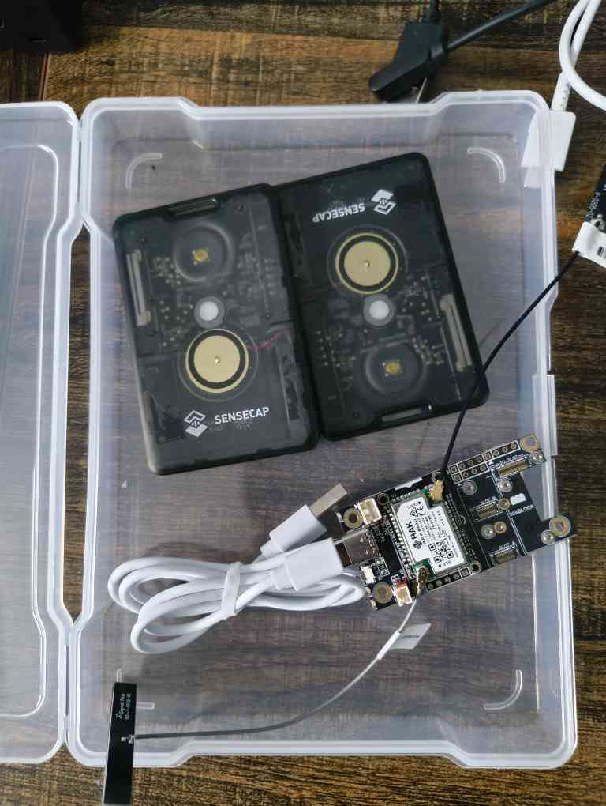

My Projects
ECG time series data extraction

- Project's goal is to digitize electrocardiograms (ECGs) images.
- The ECG images are from paper records that have been scanned or digital pictures
- Convert the static images into digital time-series signals, with millivolts vs. time measurement.
- Implementing a pipeline utilizing a U-Net architecture to extract important features within the image
LoRa Asset Tracking & Anomaly Detection
- Implented hardware/software integration for asset tracking using LoRaWAN technology and IoT sensors.
- Integrated an AI/ML component to analyze sensor data for anomaly detection in real-time tracking.